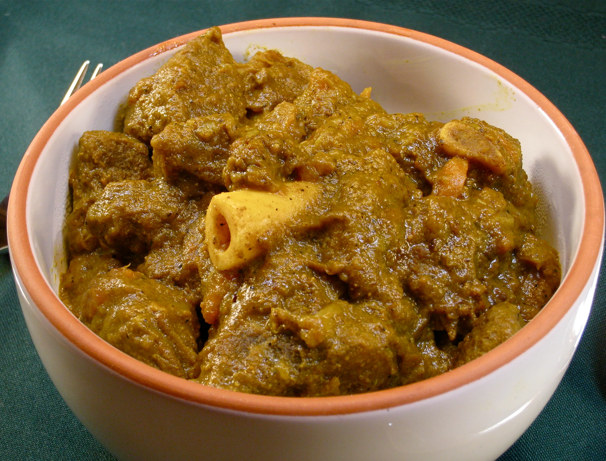

Curry Goat

Description
Insanely delicious slow-cooked Jamaican Spiced Curry that is full of flavor and tender to the bone!
Ingredients
- 1/4 cup vegetable oil
- 6 to 8 tablespoons curry powder
- 1 tablespoons allspice
- 3 pounds goat stew meat (use lamb or beef if you can't find goat
- Salt
- 2 medium onions, chopped
- 1 to 2 habanero or Scotch bonnet peppers, seeded and chopped
- 1 (2-inch) piece ginger, peeeled and minced
- 1 head garlic, peeled and chopped
- 1 (15-ounce) can tomato sauce or crushed tomatoes
- 1 tablespoon dried thyme
- 3 to 4 cups water
- 5 Yukpn gold potatoes, peeled and cut into 1-inch chunks
Directions
- Make the curry powder. You will need at least 6 tablespoons of spices for this stew, and you can kick it up
to 8-9 depending on how spicy you like it.
- Cut and salt the goat meat into large chunks, 2-3 inches across. Salt everything well and set aside to come
to room temperature for about 30 minutes.
- Heat the curry powder in oil in a large pot over medium-high heat. Mix in 2 tablespoons of the curry powder
and heat until fragrant.
- Brown meat in curried oil. Do this in batches and don’t overcrowd the pot. It will take a while to do this,
maybe 30 minutes or so. Set the browned meat aside in a bowl.
- Cook onions, habenero, ginger, garlic. Add the onions and habanero to the pot and sauté, stirring from time
to time, until the onions just start to brown, about 5 minutes. Sprinkle some salt over them as they cook.
Add the ginger and garlic, mix well and sauté for another 1-2 minutes
- Put the meat (and bones, if using) back into the pot, along with any juices left in the bowl. Mix well.
- Pour in the coconut milk and tomatoes and 5 tablespoons of the curry powder. Stir to combine. If you are
using 2 cans of coconut milk, add 3 cups of water. If you’re only using 1 can, add 4 cups of water. Add the
thyme.
- Bring to a simmer and let it cook until the meat is falling-apart tender, which will take at least 2 hours.
Longer if you have a mature goat.
- Once the meat is close to being done – tender but not falling apart yet – Add the potatoes and mix in. The
stew is done when the potatoes are. Taste for salt and add some if it needs it.
- You might need to skim off the layer of fat at the top of the curry before serving. Do this with a large,
shallow spoon, skimming into a bowl. Also, be sure to remove any bones before you serve the curry.
Serve with Jamaican rice and peas or white rice.